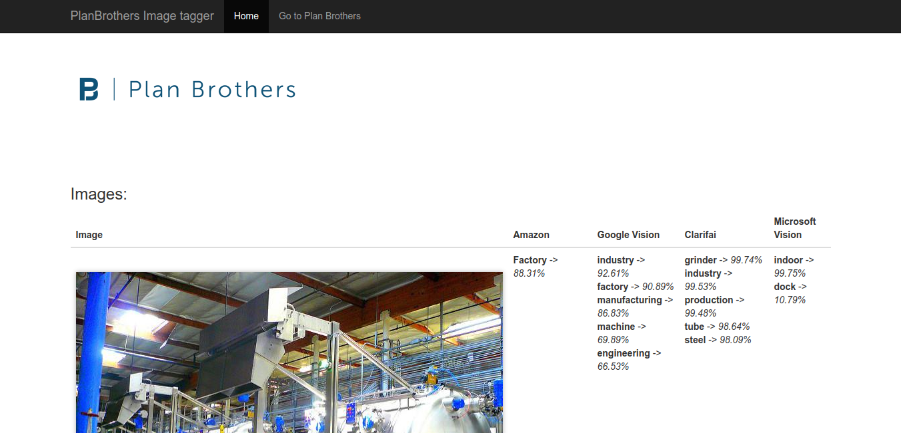

Quick Start guide¶
The objective of this guide is to help you get the project up & running as shortly and efficiently as possible.
But first, some homework.
Requirements¶
- Python 3.x
- Virtualenv
- Credentials for each service: Amazon Rekognition, Google Cloud Vision, Clarifai and Microsoft Computer Vision
Once you have the above installed, please proceed to the following:
Create a a new virtualenv and activate it:
python3 -m venv /path/to/new/virtual/environment
Activate new virtualenv:
source /path/to/new/virtual/environment/bin/activate
Install requirements file located in alejandro-cv-api-proto/requirements.txt:
pip install requirements.txt
You need to setup the following env variables in order for this to work:
export CLARIFAI_API_KEY=your_clarifai_api_key export AMAZON_CLIENT=your_amazon_client_code export AMAZON_SECRET=your_amazon_secret export GOOGLE_SECRET=your_google_api_key export MICROSOFT_API_KEY=your_microsoft_api_key
It is highly advisable to make these variables permanent. The process is varies depending on your OS and bash option, check Making env variables permanent in Ubuntu to see examples for Ubuntu
If you need help on obtaining these credentials, check the following links
Clarifai’s credentials, check this link
Amazon’s credentials, check this link
Google’s credentials, check this link
Microsoft’s credentials, check this link
The process to obtain credentials differs from one to another and can be somewhat complex (Amazon and Google mostly).
There are some other configuration variables that you need to set before starting:
# This indicates the maximum number of labels to obtain, specially useful for Google Cloud Vision MAX_LABELS # Specifies file path and name of the pickled file to use to store and retrieve data. Sort of a cache, to avoid unnecessary calls to the APIs PICKLED_FILE
MAX_LABELS indicates the number of labels to be returned for each image. A default value of 1 is used. A normal value would be something between 1 and 10 tops.
PICKLED_FILE is used to specify the relative file path in case we want to save API calls, and therefore costs, by using a pickled file, that will store results from API calls. This is not mandatory, it is up to you to decide if you want to use this to avoid calling APIs every time you visit results page.
As an extra step, you might want to change the default values in alejandro-cv-api-proto/main.py:
# Get results for all APIs tagger.data_frame = tagger.use_all(folder_name='images', pickle=True, store=True)
pickle: If True, it will try to load the pickled file with data specified with config param PICKLED_FILE, obviously you should have a file with pickled data first, if not, it will assume there is none and call APIs.
store: If True, will save the results of calling APIs into the pickled file, in case PICKLED_FILE was set. Otherwise it will not save the results.
In general, both are used when you want to save calls to APIs while rendering the results page, since results shouldn’t change unless you change the images used.
Fire up the server:
python main.py
Visit the server results page localhost
First time you visit this might take a long time, since a call to each service for all images in images folder is done, before rendering the results page. Once it is finished, you should get something like the image below.

{kind=link}